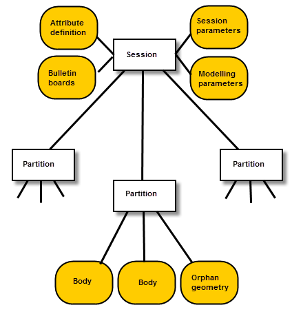

| |
Partitions |
| <<< Attributes | Chapters | Rollback >>> |
Partitions are provided to help the application organise entities in the modeling session into sets of related parts, and to save these parts as a single item.
Rollback enables the application to return the Parasolid session to an earlier state. It can be applied to individual partitions, or to the whole session. Rollback is described in more detail in Chapter 98, “Rollback”.
For an example of both of these functionalities, see the code examples in the
C++\Code Examples\Application Support\Partition and Delta Transmission
folder and in the
Rollback
folder, located in
example_applications
in your Parasolid installation folder.
The objects used by partitions and rollback are:
|
a collection of entities which can be rolled back and forward independently |
||
|
record of the entities which need to be created, modified or deleted in order to move from one pmark to an adjacent one |
A partition is a self-contained collection of bodies, orphan geometry and transforms. It can be rolled back and forward independently of other partitions.
As shown in Figure 97-1, all entities in the session are in some partition, except for:
These objects exist at a session level; they take no account of the current partition when created and are exempt from the no inter-partition references rule (see Section 97.2, “Inter-partition references”). They are not affected by partitioned rollback.
At any particular time, one partition is designated the current partition:
You can designate a partition as being light instead of standard (the default). A light partition is exactly the same as a standard partition except that there is no backward delta at the first non-initial pmark . You would consider using a light partition in a situation where just two pmarks are used and the first non-initial pmark is frequently advanced; or when three or more pmarks are used and the first non-initial pmark is frequently deleted. In these circumstances, advancing or deleting the first non-initial pmark of a light partition is much faster than for a standard partition.
An example of where light partitions can prove effective is when pmarks are used solely as a way of saving the state of the partition every so often, for the purposes of error recovery after a failed operation. To do this you need to set one pmark, which is then advanced each time the state of the partition is saved.
In certain circumstances, you can change the type of a partition using PK_PARTITION_set_type; for details, see Section 97.10, “Changing the type of the partition”. For more information about pmarks and deltas, see Section 98.2, “Partitioned rollback” and Section 98.3, “Deltas”
In general, inter-partition references are not allowed. This condition is imposed to avoid inconsistencies which could arise when using partitioned rollback. Therefore, many modeling operations that would create such references are not allowed; for example, uniting bodies in different partitions, attaching geometry to bodies in different partitions or intersecting surfaces in different partitions.
The behaviour of PK functions is determined by the fact that if an entity is created which is referenced by an existing entity, then it must be created in the same partition as that entity. If it is not so referenced - for example a new line created by PK_LINE_create - then its partition is not so determined, and it is put in the current partition.
Therefore, if a PK function creates (or may create) a reference between two existing entities, it may only be called if those two entities are in the same partition; for example, boolean operations may only be performed on faces and bodies in the same partition.
However, some functions are allowed to reference entities in other partitions during an operation, as long as there are no inter-partition references created when the operation has completed.
PK functions can be divided into the following groups when considering inter-partition references:
You can copy an entity to a given partition and specify the destination of the copied entity using PK_ENTITY_copy_2. The behaviour varies depending on the entity you are copying. For more information see the table in PK_ENTITY_copy_o_t.
PK_BODY_change_partition can be used to move a body into a different partition, preserving all its tags, provided that it is a new body - i.e. the body, and all entities within it, have been created since the last roll operation (create or goto) in its partition. The tags of the body and entities within it are unchanged. This can be used, for example, when receiving a transmit file with a number of bodies in it, and then distributing them to other partitions.
You can copy an entire partition using PK_PARTITION_copy. This function accepts a
copy_deltas
option that lets you control whether and how deltas in the partition are copied. You can choose between the following options:
When you copy a partition, the following items are also copied:
However, any user fields in the original partition are not copied.
The contents of the copied partition are in the same order (as returned by various enquiry functions) as the original partition, so that your application can relate copied entities to the original ones.
|
Note: The partition to be copied must not be at its initial pmark when you call this function. |
You can delete partitions, and optionally all the data in them, using PK_PARTITION_delete. You cannot delete the current partition.
When deleting partitions, Parasolid needs to take account of any session marks at which the partition to be deleted is current. For example, suppose you delete a partition P, which is current at several session marks. If this is the case, the current partition, C, is made current at those session marks. PK_PARTITION_delete returns an error if this is not possible.
|
Note: Any partition that does not exist at a given session mark - because it had not been created when that session mark was created - is considered to be at its initial pmark. |
See Section 98.4, “Session rollback” for more information about session marks.
By default, only empty partitions - those with no assemblies, bodies, geometric entities, KI lists or transforms - are deleted. Attempting to delete a non-empty partition returns an error.
If the
delete_non_empty
option is PK_LOGICAL_true, non-empty partitions can be deleted as well, together with all model data currently in the partition, and at each mark.
If you do not wish to delete a partition explicitly, you can make it inactive by rolling it to its initial pmark using PK_PMARK_goto_2. While a partition is inactive, it cannot be made current, and entities cannot be created in it. To make an inactive partition current again, you need to roll forward to a non-initial pmark in the partition.
See also Section 98.6, “Mark management - an example strategy”.
You can use PK_PARTITION_merge to merge together two or more partitions, combining the model data from each partition and interleaving the pmark deltas in the process. Each partition to be merged must contain a linear pmark graph.
|
Note: Light partitions may not be merged. |
PK_PARTITION_merge takes an array of partitions and an array of pmarks.
pmarks
array. The order of the pmarks in this array defines the order in which those pmarks will appear in the surviving partition. All pmarks from each original partition must appear in this array in the order in which they occur in the original partition (although not necessarily consecutively).Figure 97-2 illustrates how three partitions can be combined using this function:
Figure 97-2 Merging together the data from three partitions
Note: In the example above, pmarks could have been handed into PK_PARTITION_merge in a variety of orders. Some examples are shown below:
In each case, the resulting pmarks in the surviving partition would be ordered differently. |
You can choose to guard a given partition against a serious error using PK_PARTITION_set_guard and PK_PARTITION_goto_guard.
When set, a guard ensures the current state of the partition is retained. Only one guard can be set for a partition and setting another guard will replace the current one. Creating a pmark, rolling to a pmark, or advancing a pmark will unset any previously set guard in that partition.You can check whether a given partition has a guard using PK_PARTITION_has_guard.
If a guard is set and an error is encountered, PK_PARTITION_goto_guard can be called to restore the partition to the state at the most recent call to PK_PARTITION_set_guard.
Using these functions to repeatedly set a guard in a given partition instead of repeatedly making and deleting pmarks or advancing the partition, can provide an improvement in performance in cases where some pmarks are being used to protect against error and others are being used to support rollback. For example, in a feature modeling environment you could use a guard purely to protect against error recovery and make a pmark each time you want to mark the state of the partition for rollback purposes.
See the PK Interface Programming Reference Manual for further information on these functions.
You can set and ask the type of a partition (either light or standard) via the functions PK_PARTITION_set_type and PK_PARTITION_ask_type.
|
Note: It is better to set a partition type to light
before creating any pmarks if possible, as this avoids creating and removing a backward delta. |
For more information about pmarks and deltas, see Section 98.2, “Partitioned rollback” and Section 98.3, “Deltas”.
|
Note: These functions should only be called when partitioned rollback has been started by calling PK_DELTA_register_callbacks. |
The majority of functions for enquiring, creating, and modifying partitions have names of the form PK_PARTITION_ <operation>. See the PK Interface Programming Reference Manual for more information about these functions.
The following functions are also relevant to partitions:
| <<< Attributes | Chapters | Rollback >>> |